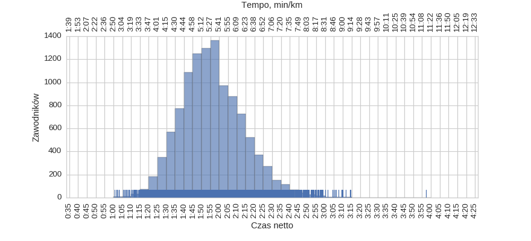
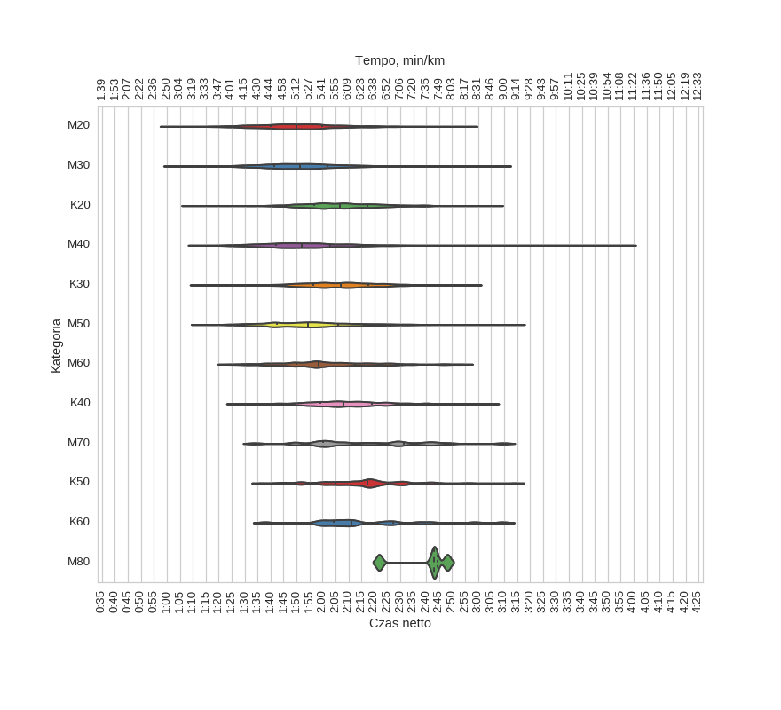
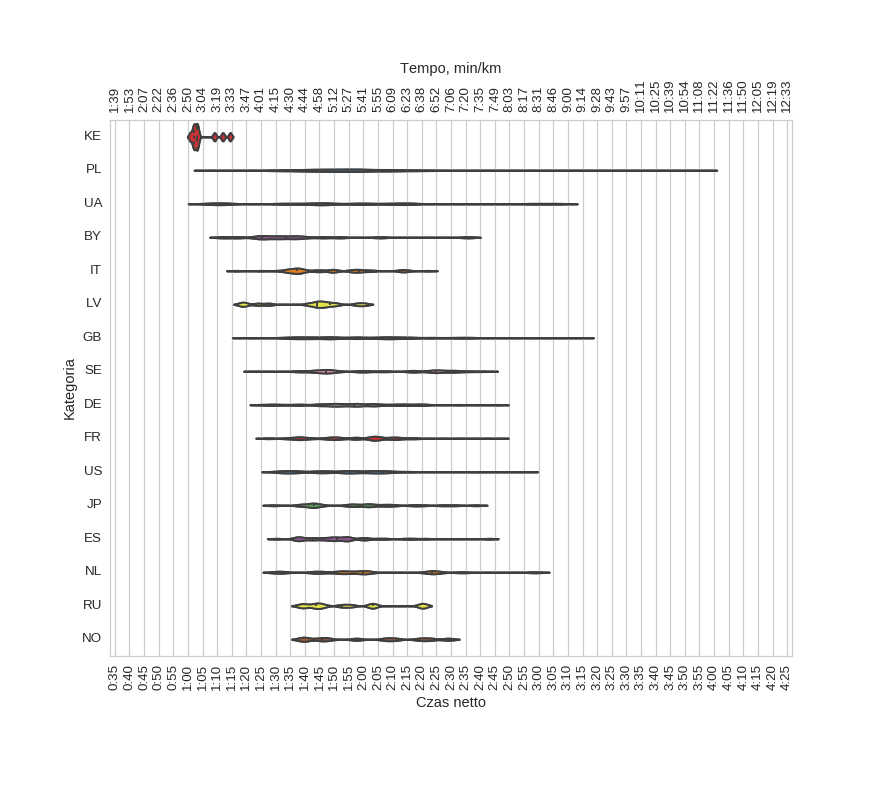
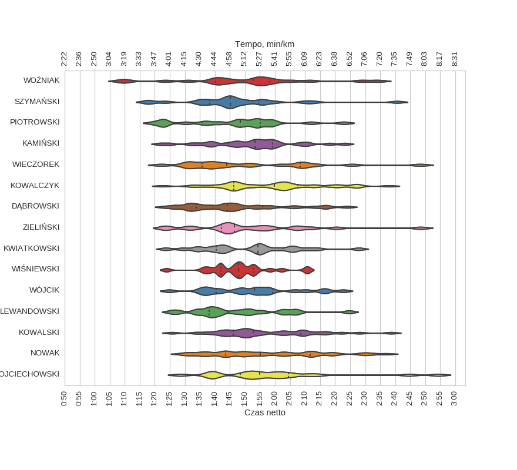
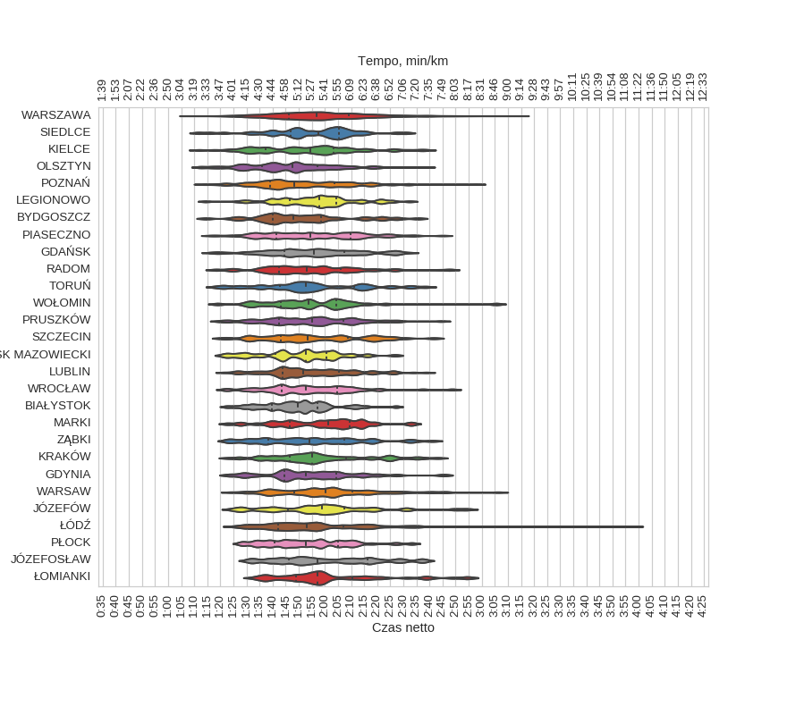

Statystyki biegowe
Statystyki biegowe9 Półmaraton Warszawski (2014)
Histogramy
Klasyfikacja generalna

| mean | std | min | 25% | 50% | 75% | max | |
|---|---|---|---|---|---|---|---|
| czas | 1:56:05 | 0:17:52 | 1:00:47 | 1:43:51 | 1:54:49 | 2:07:18 | 3:57:24 |
kobiety
| mean | std | min | 25% | 50% | 75% | max | |
|---|---|---|---|---|---|---|---|
| czas | 2:08:06 | 0:16:21 | 1:09:04 | 1:57:23 | 2:07:31 | 2:18:05 | 3:14:08 |
mężczyźni
| mean | std | min | 25% | 50% | 75% | max | |
|---|---|---|---|---|---|---|---|
| czas | 1:52:49 | 0:16:50 | 1:00:47 | 1:41:33 | 1:51:42 | 2:02:22 | 3:57:24 |
Korelacje międzyczasów z wynikiem końcowym
Korelacja tempa 5 / 21.0975 km
Korelacja tempa 10 / 21.0975 km
Korelacja tempa 15 / 21.0975 km

Korelacja tempa 20 / 21.0975 km
Histogram tempa na różnych dystansach
Wykresy rybkowe
wg płci
| czas_netto_s | count | |||||||
|---|---|---|---|---|---|---|---|---|
| mean | std | min | 25% | 50% | 75% | max | ||
| plec | ||||||||
| K | 2:08:06 | 0:16:21 | 1:09:04 | 1:57:23 | 2:07:31 | 2:18:05 | 3:14:08 | 2385 |
| M | 1:52:49 | 0:16:50 | 1:00:47 | 1:41:33 | 1:51:42 | 2:02:22 | 3:57:24 | 8770 |
wg kategorii

| czas_netto_s | count | |||||||
|---|---|---|---|---|---|---|---|---|
| mean | std | min | 25% | 50% | 75% | max | ||
| kat | ||||||||
| K20 | 2:07:00 | 0:16:46 | 1:09:04 | 1:56:49 | 2:06:34 | 2:17:18 | 3:06:10 | 764 |
| K30 | 2:07:26 | 0:15:44 | 1:12:07 | 1:56:35 | 2:06:59 | 2:17:33 | 2:58:06 | 1097 |
| K40 | 2:09:50 | 0:15:50 | 1:26:11 | 1:59:06 | 2:08:03 | 2:19:02 | 3:04:48 | 421 |
| K50 | 2:15:48 | 0:17:46 | 1:36:17 | 2:05:02 | 2:17:12 | 2:25:05 | 3:14:08 | 83 |
| K60 | 2:17:46 | 0:22:40 | 1:37:53 | 2:04:10 | 2:11:01 | 2:27:20 | 3:09:24 | 18 |
| M20 | 1:50:56 | 0:16:56 | 1:00:47 | 1:39:54 | 1:49:59 | 1:59:57 | 2:56:16 | 1905 |
| M30 | 1:52:22 | 0:16:13 | 1:02:00 | 1:41:15 | 1:51:18 | 2:02:00 | 3:09:23 | 3852 |
| M40 | 1:53:23 | 0:16:42 | 1:11:33 | 1:42:03 | 1:51:52 | 2:03:00 | 3:57:24 | 2218 |
| M50 | 1:55:45 | 0:17:54 | 1:12:58 | 1:42:34 | 1:54:34 | 2:05:57 | 3:14:22 | 597 |
| M60 | 2:01:44 | 0:18:00 | 1:23:11 | 1:49:48 | 1:58:40 | 2:12:32 | 2:54:18 | 169 |
| M70 | 2:17:01 | 0:22:31 | 1:33:56 | 2:00:07 | 2:14:30 | 2:31:23 | 3:09:36 | 25 |
| M80 | 2:39:04 | 0:11:43 | 2:21:51 | 2:37:47 | 2:43:08 | 2:44:25 | 2:48:10 | 4 |
wg krajów

| czas_netto_s | count | |||||||
|---|---|---|---|---|---|---|---|---|
| mean | std | min | 25% | 50% | 75% | max | ||
| kraj | ||||||||
| BY | 1:38:26 | 0:21:38 | 1:11:47 | 1:25:23 | 1:33:27 | 1:44:26 | 2:35:43 | 14 |
| DE | 1:57:51 | 0:18:24 | 1:24:54 | 1:46:10 | 1:56:55 | 2:09:28 | 2:46:01 | 33 |
| ES | 1:53:43 | 0:15:29 | 1:30:16 | 1:42:38 | 1:51:04 | 2:00:11 | 2:43:03 | 30 |
| FR | 1:57:19 | 0:17:10 | 1:26:39 | 1:42:54 | 1:57:30 | 2:07:51 | 2:46:12 | 68 |
| GB | 2:00:43 | 0:23:06 | 1:19:47 | 1:42:43 | 1:58:21 | 2:13:52 | 3:14:08 | 48 |
| IT | 1:48:06 | 0:15:28 | 1:16:19 | 1:37:10 | 1:45:03 | 1:58:32 | 2:22:12 | 36 |
| JP | 1:59:50 | 0:18:44 | 1:29:23 | 1:43:04 | 1:59:15 | 2:09:57 | 2:38:35 | 22 |
| KE | 1:05:10 | 0:04:47 | 1:00:47 | 1:02:03 | 1:03:07 | 1:07:36 | 1:14:26 | 10 |
| LV | 1:40:41 | 0:13:57 | 1:18:28 | 1:27:41 | 1:44:06 | 1:48:30 | 2:00:26 | 13 |
| NL | 2:03:39 | 0:24:29 | 1:30:35 | 1:47:41 | 1:59:55 | 2:23:31 | 2:58:39 | 15 |
| NO | 2:01:57 | 0:18:30 | 1:39:11 | 1:45:47 | 2:02:39 | 2:17:14 | 2:29:05 | 10 |
| PL | 1:56:08 | 0:17:39 | 1:05:38 | 1:43:57 | 1:54:49 | 2:07:15 | 3:57:24 | 10657 |
| RU | 1:55:15 | 0:14:57 | 1:38:28 | 1:43:54 | 1:52:39 | 2:03:09 | 2:20:17 | 11 |
| SE | 2:05:33 | 0:21:22 | 1:23:20 | 1:47:05 | 2:03:11 | 2:24:59 | 2:41:38 | 32 |
| UA | 1:54:40 | 0:35:02 | 1:07:05 | 1:34:25 | 1:48:38 | 2:11:30 | 3:06:10 | 15 |
| US | 1:57:46 | 0:20:48 | 1:29:21 | 1:43:43 | 1:55:21 | 2:06:46 | 2:55:30 | 42 |
wg nazwisk

| czas_netto_s | count | |||||||
|---|---|---|---|---|---|---|---|---|
| mean | std | min | 25% | 50% | 75% | max | ||
| nazwisko | ||||||||
| DĄBROWSKI | 1:47:05 | 0:16:19 | 1:23:20 | 1:33:53 | 1:44:12 | 1:55:48 | 2:23:58 | 31 |
| KAMIŃSKI | 1:52:13 | 0:14:22 | 1:21:47 | 1:44:19 | 1:53:19 | 1:59:16 | 2:23:15 | 30 |
| KOWALCZYK | 1:58:38 | 0:17:04 | 1:22:34 | 1:46:16 | 1:59:49 | 2:07:36 | 2:37:59 | 40 |
| KOWALSKI | 1:57:06 | 0:16:13 | 1:25:45 | 1:46:12 | 1:52:46 | 2:08:41 | 2:38:39 | 34 |
| KWIATKOWSKI | 1:51:45 | 0:15:46 | 1:23:39 | 1:40:26 | 1:54:14 | 2:02:39 | 2:27:52 | 23 |
| LEWANDOWSKI | 1:47:53 | 0:15:06 | 1:25:29 | 1:38:01 | 1:44:19 | 1:57:21 | 2:24:38 | 20 |
| NOWAK | 1:57:35 | 0:18:27 | 1:29:04 | 1:43:31 | 1:55:08 | 2:11:47 | 2:37:09 | 41 |
| PIOTROWSKI | 1:46:24 | 0:16:40 | 1:19:26 | 1:35:47 | 1:48:28 | 1:55:02 | 2:22:58 | 21 |
| SZYMAŃSKI | 1:46:57 | 0:17:25 | 1:17:15 | 1:38:17 | 1:45:13 | 1:54:27 | 2:40:37 | 25 |
| WIECZOREK | 1:51:29 | 0:21:54 | 1:22:11 | 1:35:42 | 1:43:58 | 2:08:27 | 2:48:17 | 20 |
| WIŚNIEWSKI | 1:48:17 | 0:10:41 | 1:23:54 | 1:41:54 | 1:47:52 | 1:52:45 | 2:10:44 | 23 |
| WOJCIECHOWSKI | 1:58:35 | 0:20:32 | 1:28:32 | 1:48:33 | 1:54:50 | 2:04:27 | 2:54:18 | 21 |
| WOŹNIAK | 1:49:33 | 0:21:22 | 1:08:51 | 1:40:13 | 1:52:50 | 1:58:11 | 2:34:14 | 21 |
| WÓJCIK | 1:52:42 | 0:15:25 | 1:24:51 | 1:40:30 | 1:53:06 | 1:59:07 | 2:22:41 | 21 |
| ZIELIŃSKI | 1:51:59 | 0:20:15 | 1:23:30 | 1:42:09 | 1:46:32 | 2:00:46 | 2:48:26 | 20 |
wg miejscowości

| czas_netto_s | count | |||||||
|---|---|---|---|---|---|---|---|---|
| mean | std | min | 25% | 50% | 75% | max | ||
| miejscowosc | ||||||||
| BIAŁYSTOK | 1:49:37 | 0:13:17 | 1:22:31 | 1:39:47 | 1:49:30 | 1:57:15 | 2:27:11 | 53 |
| BYDGOSZCZ | 1:51:24 | 0:17:50 | 1:14:32 | 1:40:11 | 1:47:46 | 1:58:38 | 2:35:36 | 52 |
| GDAŃSK | 1:55:51 | 0:17:15 | 1:16:19 | 1:44:37 | 1:55:46 | 2:07:23 | 2:32:14 | 121 |
| GDYNIA | 1:54:37 | 0:17:09 | 1:23:08 | 1:44:37 | 1:52:50 | 2:04:23 | 2:45:24 | 82 |
| JÓZEFOSŁAW | 2:00:54 | 0:18:54 | 1:30:51 | 1:46:09 | 1:57:11 | 2:16:22 | 2:37:54 | 50 |
| JÓZEFÓW | 1:59:01 | 0:20:19 | 1:24:40 | 1:45:59 | 1:58:54 | 2:07:34 | 2:54:18 | 41 |
| KIELCE | 1:52:47 | 0:18:50 | 1:11:51 | 1:37:19 | 1:54:22 | 2:03:27 | 2:38:32 | 75 |
| KRAKÓW | 1:58:11 | 0:18:33 | 1:23:11 | 1:46:30 | 1:55:15 | 2:08:01 | 2:43:10 | 65 |
| LEGIONOWO | 1:56:31 | 0:14:42 | 1:14:26 | 1:46:40 | 1:57:50 | 2:04:21 | 2:32:22 | 82 |
| LUBLIN | 1:54:44 | 0:15:59 | 1:21:26 | 1:43:50 | 1:51:41 | 2:05:24 | 2:38:50 | 123 |
| MARKI | 1:58:29 | 0:16:26 | 1:22:44 | 1:46:27 | 2:01:17 | 2:09:35 | 2:33:23 | 45 |
| MIŃSK MAZOWIECKI | 1:50:04 | 0:15:26 | 1:21:00 | 1:40:58 | 1:52:35 | 2:00:39 | 2:26:46 | 48 |
| OLSZTYN | 1:46:57 | 0:16:42 | 1:12:22 | 1:35:58 | 1:47:35 | 1:57:08 | 2:38:39 | 107 |
| PIASECZNO | 1:55:55 | 0:18:04 | 1:16:21 | 1:41:20 | 1:54:28 | 2:09:52 | 2:44:59 | 127 |
| POZNAŃ | 1:51:34 | 0:18:23 | 1:13:38 | 1:38:55 | 1:48:08 | 2:03:33 | 2:57:37 | 96 |
| PRUSZKÓW | 1:54:29 | 0:17:02 | 1:19:34 | 1:42:25 | 1:55:10 | 2:06:56 | 2:44:27 | 90 |
| PŁOCK | 1:53:31 | 0:15:46 | 1:27:57 | 1:40:38 | 1:52:37 | 2:05:00 | 2:33:13 | 92 |
| RADOM | 1:54:55 | 0:18:17 | 1:18:06 | 1:42:33 | 1:52:58 | 2:06:11 | 2:47:44 | 103 |
| SIEDLCE | 1:55:04 | 0:16:22 | 1:11:33 | 1:46:57 | 1:57:26 | 2:05:21 | 2:31:09 | 52 |
| SZCZECIN | 1:56:05 | 0:18:57 | 1:20:41 | 1:42:59 | 1:53:21 | 2:08:50 | 2:41:35 | 58 |
| TORUŃ | 1:54:56 | 0:19:40 | 1:18:27 | 1:42:42 | 1:52:35 | 2:11:09 | 2:38:31 | 46 |
| WARSAW | 2:00:49 | 0:18:54 | 1:24:05 | 1:48:17 | 2:00:12 | 2:10:33 | 3:06:10 | 100 |
| WARSZAWA | 1:58:13 | 0:17:29 | 1:07:54 | 1:46:04 | 1:56:54 | 2:09:06 | 3:14:22 | 5575 |
| WOŁOMIN | 1:54:37 | 0:18:27 | 1:19:02 | 1:43:06 | 1:53:37 | 2:04:20 | 3:05:26 | 40 |
| WROCŁAW | 1:54:08 | 0:16:42 | 1:21:47 | 1:43:19 | 1:52:34 | 2:04:33 | 2:48:39 | 60 |
| ZĄBKI | 1:54:31 | 0:19:31 | 1:22:56 | 1:38:27 | 1:54:14 | 2:07:15 | 2:40:57 | 53 |
| ŁOMIANKI | 2:01:20 | 0:20:18 | 1:32:54 | 1:49:03 | 1:57:12 | 2:10:23 | 2:54:33 | 55 |
| ŁÓDŹ | 1:56:05 | 0:20:59 | 1:25:14 | 1:42:12 | 1:52:56 | 2:07:07 | 3:57:24 | 103 |
Menu
HistogramyKorelacjeHistogram - międzyczasyWykresy rybkowe
∙ wg płci
∙ wg kategorii
∙ wg krajów
∙ wg nazwisk
∙ wg miejscowości
Dystans: 21.0975 km
Liczba uczestników: 11155
Wygenerowano: 2017-04-17 11:32:11.397001